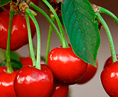
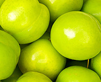

Products

tomatoes
Hardening your seedlings is one of the most important things you can do to help ensure their survival.
cowpeas
Peas are cultivated for the. Some cultivars are grown for their tender green pods such as snap peas (sugar snaps) and snow 
Orange
Commercially grown orange trees can reach heights of up to 20 feet. Lemons are very sensitive to cold and must be grown in areas that are not prone to extreme cold.
Carots
Carrot farmers in Kenya can now harvest up to 17 tonnes per acre in just 100 days, thanks to a new high yielding, fast maturing and disease resistant carrot variety from Kenya Highland Seed Limited.
Onions
Farmers who have already taken up growing of garlic have had good returns in a short time. Done under the required conditions the crop can reach a good harvest.
Kales
Kales are one of Kenya’s most demanded green vegetables especially due to their nutritional value. The Kales business is extremely vibrant both in urban areas and rural areas.